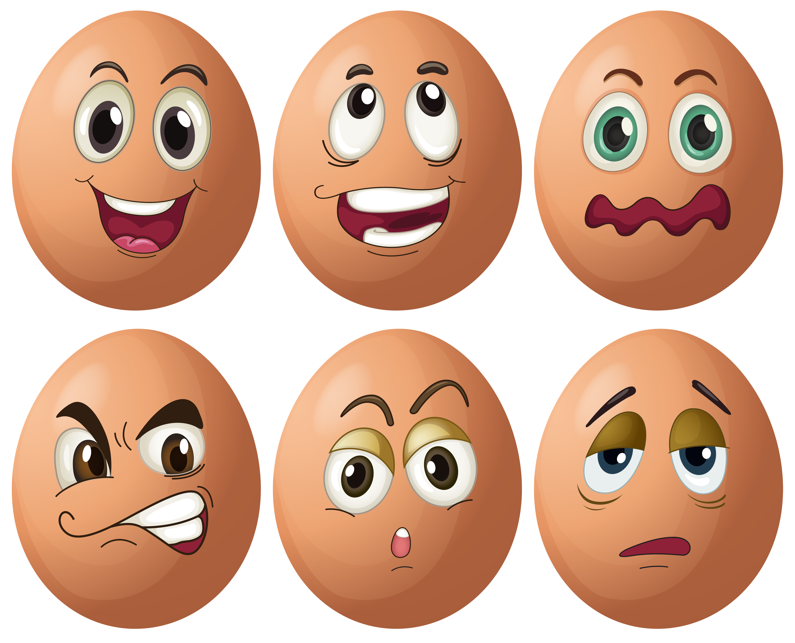

Los huevos de las aves constituyen un alimento habitual en la alimentación de los humanos. Se presentan protegidos por una cáscara y son ricos en proteínas (principalmente albúmina, que es la clara o parte blanca del huevo) y lípidos. Son un alimento de fácil digestión, componente principal de múltiples platos dulces y salados, y una parte imprescindible en muchos otros debido a su propiedad aglutinante.
